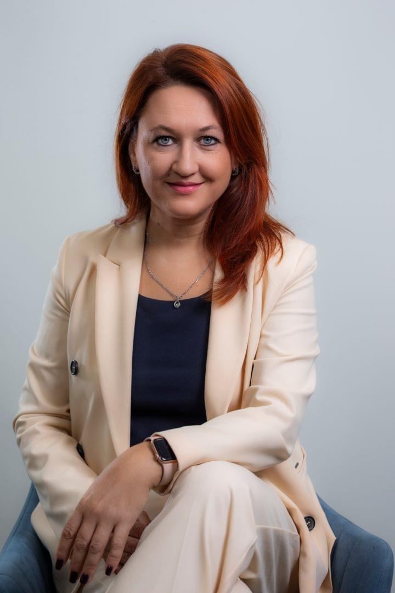
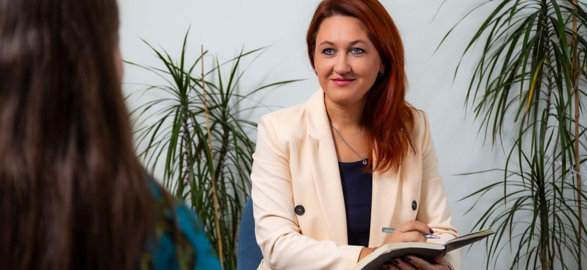

Три принципа, которые позволяют нам оказывать качественную психотерапевтическую помощь
Подобрать специалистаЭффективность Современные методы лечения с научно-доказанной эффективностью
Равноправное сотрудничество Прозрачность диагностики, совместное принятие решений и уважение к индивидуальности клиента
Комплексный подход В каждом случае стремимся найти оптимальный баланс методов, соответствующий конкретно вашей ситуации. Мультидисциплинарная команда специалистов на страже вашего ментального здоровья
Обращение

Лавровой Виктории Анатольевны
Идея создания клиники родилась давно, собиралась по направлениям, тематике и специалистам.
Тема психосоматической медицины настолько многогранна и сложна, что чем дольше я варюсь в психосоматической теме, тем яснее и понятнее становится, что мало кому что ясно и понятно, а необходимость разобраться есть у огромного количества людей с разных сторон баррикад-пациенты, врачи-интернисты, врачи-психиатры и психотерапевты, психологи, просто подозревающие у себя «что-то психосоматическое» и «какие-то болезни от нервов» или, напротив, желающие исключить это мутное и неясное и подтвердить физическое осязаемое и необидное.
Мы не просто лечим симптомы, а помогаем найти и устранить их причину,
чтобы вернуть вам полноценную жизнь
Консультация психиатра — это диалог, где важно только ваше состояние и комфорт.
Команда специалистов
У нас вы можете получить комплексное решение проблемы, где психиатр, психотерапевт, психолог и невролог работают вместе. Это позволяет точно поставить диагноз и подобрать терапию, которая учитывает все аспекты вашего состояния
Уютная атмосфера
Никакой больничной обстановки. У нас уютно, как в гостях у понимающих друзей, которые при этом — эксперты в своем деле
Ключевая специализация — лечение психосоматических заболеваний
Наши ведущие психиатры имеют более чем 20-летний опыт работы именно с психосоматическими расстройствами. За ширмой физического недомогания (перебоями в работе сердца, дисфункцией кишечника или приступами нехватки воздуха) смогут распознать тревожные или депрессивные расстройства. Мы не лечим следствие — мы ищем источник проблемы
Клиника с научным подходом
Мы сотрудничаем с медицинскими вузами и проводим научные исследования. Это значит, что вы получаете лечение с научно доказанной эффективностью и по современным стандартам. По нашей научно-клинической базе студенты крупнейших медицинских ВУЗов Санкт-Петербурга осваивают курсы «Психосоматическая медицина» и «Психиатрия»
Экспертиза
Ключевая концепция нашей клиники — обстановка принятия и комплексное сопровождение на пути к ментальному здоровью
У нас нет «медицинских» стен, звуков, запахов и цвета. Вокруг много зелени, продуманных психотерапевтических деталей: от уютного Ждуна при входе, которому мы меняем наряды по сезону, до надписи-посыла к преобразованиям на уголке большого зеркала в холле. Это место, куда хочется вернуться, потому что вы понятны и вам все понятно и легко. А не потому, что необходимо подпитать ипохондрический или тревожно-мнительный радикал дополнительным обследованием, исключающим несуществующую патологию.Уютный фикус раскинет лапы вам на встречу, плечи согреет плед, кофе с печеньем расположит к спокойной доверительной беседе со специалистом.
При максимально современном медицинском подходе к психосоматическим проблемам, мы минимизировали «медицину» в атмосфере клиники.

Специализация